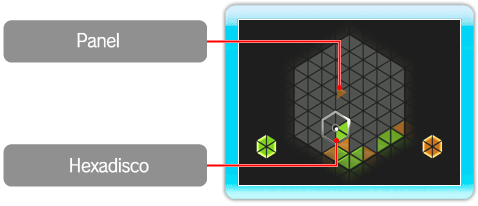

● ¿En qué consiste ROTOHEX?
ROTOHEX es un juego de puzles que emplea motivos hexagonales. Utiliza el cursor (hexadisco) para crear hexágonos (HEX)
conforme mueves los paneles triangulares que van cayendo. Al principio,
probablemente emplees el método de ensayo y error para intentar descubrir cómo construir HEX,
¡pero poco a poco irás aprendiendo instintivamente!

● Cómo crear un HEX
En el tablero irán cayendo paneles triangulares de distintos colores.
Junta seis paneles del mismo color para crear hexágonos (HEX).
Puedes crear hexágonos si desplazas el hexadisco a cualquier lugar del tablero y lo giras (el hexadisco y los paneles que contiene)
a izquierda y derecha. El funcionamiento y el objetivo del juego son los mismos en todos los modos:
crear HEX sin parar para hacerlos desaparecer.
La partida finalizará si el tablero se llena por completo de paneles (p. 9. Cómo jugar).
● Modos de juego
Este juego cuenta con cuatro modos: SOLO Mode (modo individual), VS Mode (modo enfrentamiento),
ENDLESS Mode (modo continuo) y SPRINT Mode (modo carrera). El objetivo del juego es el mismo en cada modo:
creando HEX para hacerlos desaparecer.
La partida finalizará si el tablero se llena por completo de paneles (p. 9. Cómo jugar).
Los cuatro modos permiten jugar simultáneamente a dos jugadores.
Los jugadores colaboran entre ellos para crear HEX en un mismo tablero en los modos individual, continuo y carrera,
mientras que pueden competir uno contra otro en el modo enfrentamiento.
Nota: Solo podrás seleccionar ENDLESS Mode (modo continuo) y SPRINT Mode (modo carrera)
una vez que hayas reunido una serie de condiciones en el SOLO Mode (modo individual).